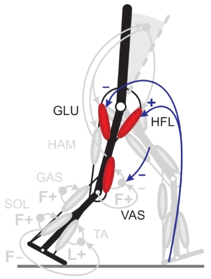

Bio-inspired Locomotion Controller
Sensitivity analysis on reflex parameters and mimetism based optimisation

Overview
This project was a student project at the EPFL Biorob lab, aiming to tune a bio-inspired bipedal locomotion model controlled by muscle reflexes.

Problem Statement
The first goal of this project was to study the impact of each of the 25 model parameters of the gait stability, and then to tune it in order to reproduce pathological gaits. The complexity of this model comes from the interactions between the antagonist and agonist muscles, making it hard to study parameters independently.
Approach
In order to evaluate the relations with the model's parameter and the generated gait, I started by doing a sensitivity analysis. This study was made by varying each parameter independently, while the others were set to tuned values. For that matter, I established stability and gait quality metrics, for example the energy/distance ratio. I then optimised the simulation execution and logging, and adapted it so that evaluations could be done in parallel on a cluster.
Once these tools were developed, I proposed a formulation of the pathological gait reproduction as a multi-objective optimisation problem. As I had access to clinical measures of idiopathic toe walking gaits, with the joint angles for hip, knee and heel along a full stride, I set the model's parameters as degrees of freedom, with the objective of mimicking the joint angles from the patients.
I then performed a literature review on multi-objective optimisation, and wrote my implementation of the NSGA-II algorithm.
Results
This resulted in a good proof of concept, with the model adopting a "toe walking" like gait after optimisation, with a larger stimulation of the soleus and gastrocnemius muscles than in a normal stride.